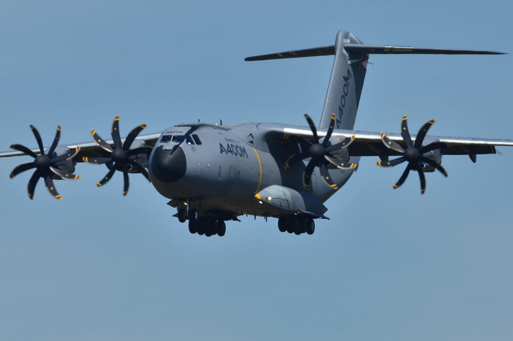

Airbus A400M plane (31) (73)
On May 9th 2005, a military cargo plane on a test flight crashed in Spain, Seville, killing four out of six crew members on board. Before the crash, pilots had reported that there were some technical problems and they asked permission for an emergency land, but it failed. The investigation reported that three of four engines of the aircraft failed during its departure: the crew tried to solve the problem, but were not quick enough for recovery to safe flight.
"According to a report by the news agency Reuters, the problem had been caused by the way the software had been installed, rather than an issue with it's design."
This model of plane was purchased by France, Britain, Belgium, Germany, Luxemburg, Spain and Turkey, however this incident created further delays for its use.